Here is a small selection of projects I have worked on that demonstrate my skills with different mediums
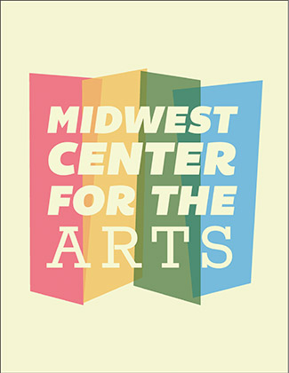
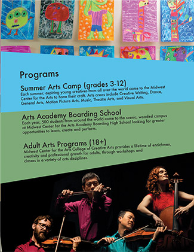
Program brochure for the Midwest Art CenterA poster titled "Eee!" featuring image appropriation
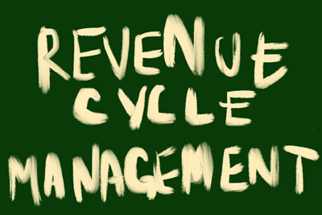
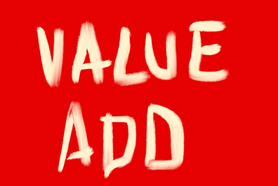
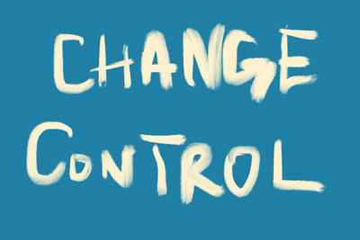
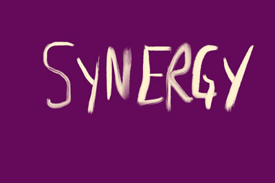
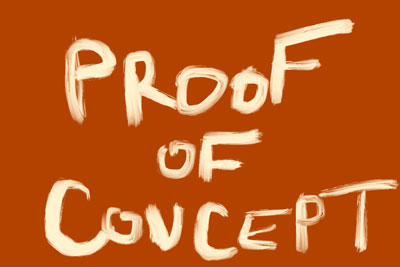
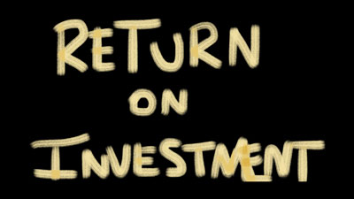
A series titled "Jargon"A poster series for the Basel Symphony Orchestra
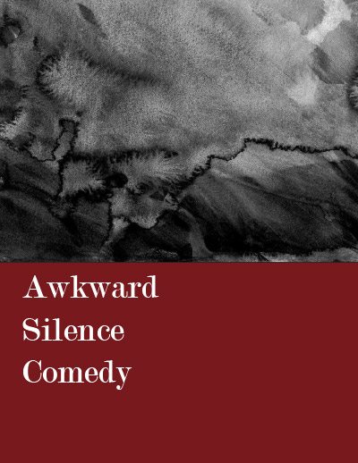
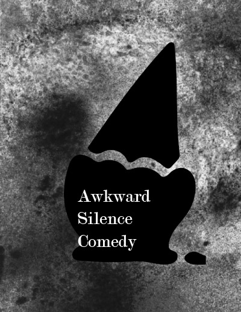
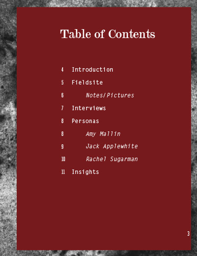
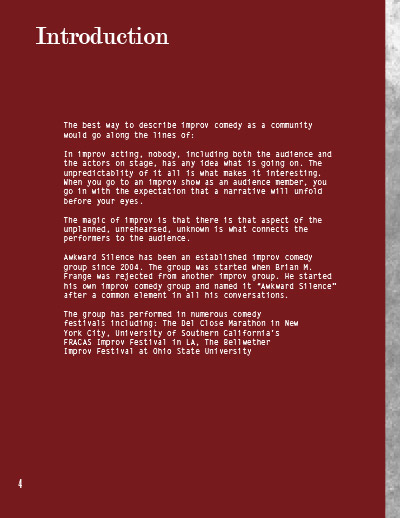
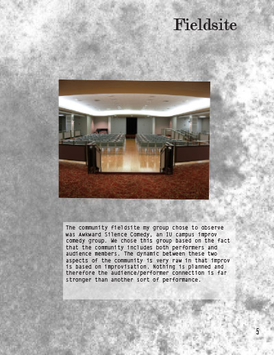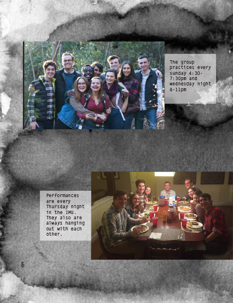
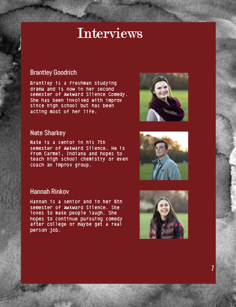
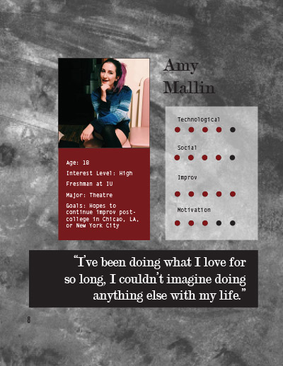
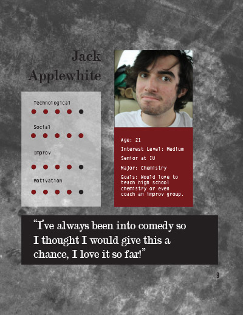
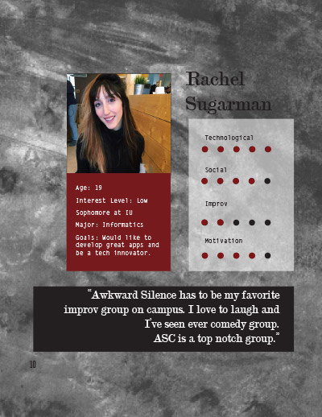
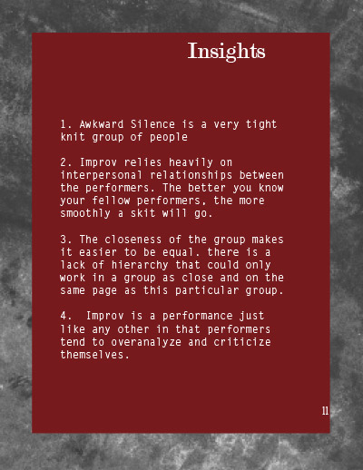
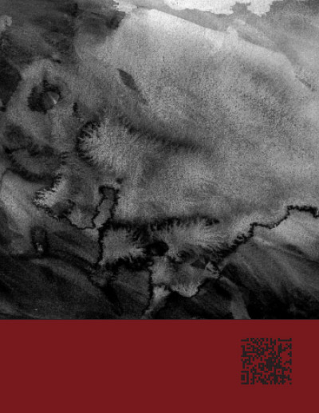
A booklet showcasing Awkward Silence Personas Research